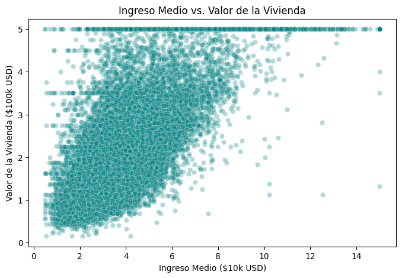
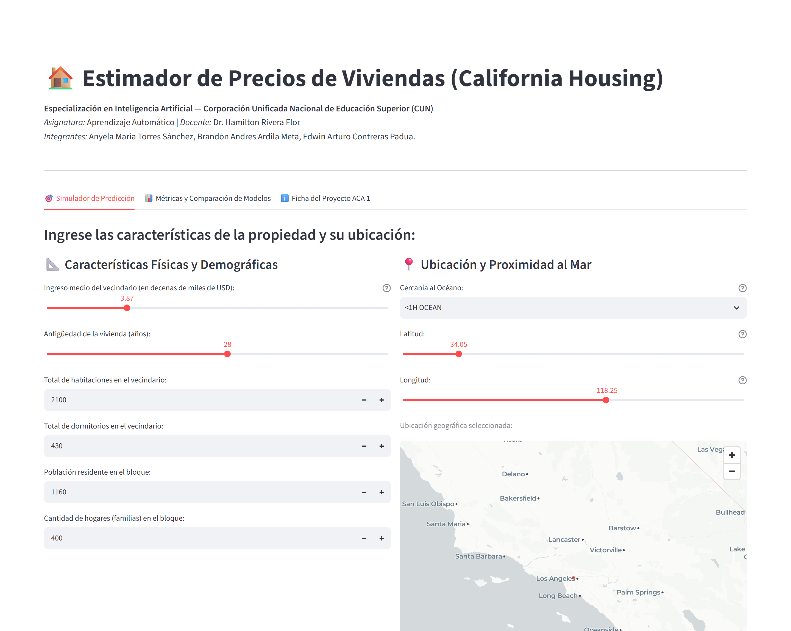

1 Contexto y situación problema
- Pilar: Ventas — sector inmobiliario / comercial.
- Dataset: California Housing (20.640 registros, 10 variables).
- Pregunta orientadora: ¿Cómo transformar datos socioeconómicos y geográficos en una herramienta que estime el precio de una vivienda de forma confiable e interactiva?
- Objetivo general: Desarrollar una solución integral de Machine Learning clásico, desde la preparación de datos hasta el despliegue de un tasador interactivo en Streamlit.
IMPACTO Una referencia rápida y accesible para apoyar decisiones de compra y venta de vivienda.
2 Datos y preparación
- EDA: 20.640 distritos; variable objetivo median_house_value (USD).
- Hallazgo: relación positiva entre ingreso medio y precio.
- Nulos: 207 en total_bedrooms; imputación con la mediana.
- Transformación: One-Hot Encoding para ocean_proximity y estandarización numérica.
- Partición: 80% entrenamiento (16.512) y 20% prueba (4.128), semilla 42.

3 Ruta metodológica · 5 pasos
1
Exploración y EDAComprensión del problema, distribuciones y valores nulos.
2
Limpieza y preparaciónImputación, One-Hot Encoding, escalado y partición.
3
Modelado clásicoEntrenamiento de Regresión Lineal y Random Forest.
4
EvaluaciónR², MAE y RMSE sobre el conjunto de prueba.
5
DespliegueAplicación interactiva en Streamlit.
20.640registros
207nulos tratados
16.512entrenamiento
4.128prueba
Alcance y limitaciones
- Los datos son históricos (censo de California, 1990); no reflejan el mercado actual.
- La estimación es una referencia académica y no sustituye un avalúo profesional.
- Trabajo futuro: incorporar datos actuales y más variables del inmueble.
Referencias (APA 7)
Géron, A. (2019). Hands-On Machine Learning with Scikit-Learn, Keras, and TensorFlow (2.ª ed.). O'Reilly Media.
Pace, R. K., & Barry, R. (1997). Sparse spatial autoregressions. Statistics & Probability Letters, 33(3), 291–297.
Pedregosa, F., et al. (2011). Scikit-learn: Machine learning in Python. Journal of Machine Learning Research, 12, 2825–2830.
4 Modelos y resultados
Se compararon dos algoritmos clásicos de aprendizaje supervisado:
- Regresión Lineal — modelo base paramétrico de referencia.
- Random Forest Regressor — ensamble de árboles de decisión.
| Métrica | Reg. Lineal | Random Forest |
|---|---|---|
| R² | 62,54 % | 81,67 % |
| MAE | USD 50.670 | USD 31.672 |
| RMSE | USD 70.059 | USD 49.007 |
Modelo seleccionado: Random Forest. Redujo el error promedio en ~USD 19.000 y capturó relaciones no lineales entre ubicación, ingreso y precio.
5 Vista previa de la app en Streamlit

Predicción de ejemplo
USD 189.760
Margen de error promedio
USD 158.090 – 221.430
USD 158.090 – 221.430
Sliders de ingreso, antigüedad y habitaciones
Mapa interactivo
Predicción + margen de error
https://aca1-aprendizaje-automatico-grupo-17.streamlit.app/
Datos históricos de California (1990). Referencia académica, no avalúo profesional.
6 Cierre y enlaces
- La preparación de datos fue clave: imputación robusta y transformación de variables.
- Random Forest superó a la Regresión Lineal: R² 81,67 % y error promedio de USD 31.672.
- La app en Streamlit hace accesible la estimación a usuarios no técnicos; es una referencia, no un avalúo.
Aplicación desplegada
https://aca1-aprendizaje-automatico-grupo-17.streamlit.app/
Repositorio del proyecto
https://github.com/edwincontri/ACA1-Aprendizaje-Automatico
Video de sustentación
https://youtu.be/GRmsT-hqCvA